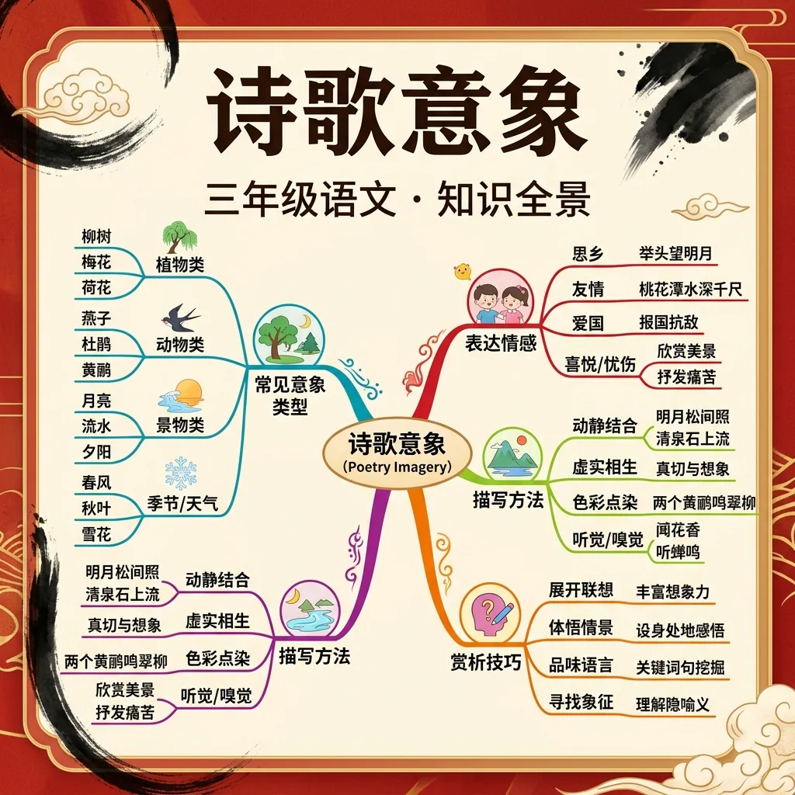

读诗五步法：读通→读懂→品味→感悟→背诵；意象是诗的灵魂，意境是诗的境界
🌍 And（已知）：你已经掌握了一些基础知识
⚡ But（问题）：遇到更复杂的情况还不够用
💡 Therefore（新知）：学习今天的内容，让能力更完整、更系统
和前测对比一下，看看你进步了多少！ 🚀
1. 学完本节课，你对这个语文知识点的掌握程度是？
2. 你能用今天学的知识写一个句子或段落吗？
💡 常见错误往往就在细节中，仔细检查每一步！
和 AI 对话，深化对本节课知识点的理解
💬 参考提示词（复制给 AI 使用）：
✨ 可以用上面的提示词与 AI 展开深度对话，AI 会根据你的回答给出个性化指导。
回忆：今天学了哪些关键词和规则？试着说出来。
用自己的话解释今天学的核心概念，不看书能说清楚吗？
用今天的知识解决一个实际问题，或写一个新例子。
把今天的知识与已有知识联系起来：有什么共同点？有什么区别？能不能自己创造一道新题？
先独立作答，再点选项查看对错与错因。
读到"床前明月光，疑是地上霜"时，诗人用"霜"主要想表达
下列哪项最能体现"柳枝"作为离别意象的特点？
看到"落叶纷飞"时，诗人最可能寄托的情感是
《静夜思》中"举头望明月，____"通过明月意象表达思乡之情
答案：低头思故乡
明月是古典诗歌典型思乡意象
当读到"春蚕到死丝方尽"时，"蚕"的意象常象征____的精神
答案：无私奉献
动物意象常被赋予人格化特征
判断意象作用的正确理解是
对比三首描写不同季节的古诗
❓ 为什么诗人总爱写月亮？它到底有啥特别的？
❓ 柳树在诗里为啥老是代表离别？不能是别的吗？
❓ 背了那么多意象还是不会用，考试咋办？
学完这一课，这些问题你都能自信地回答。
🎯 能说出3个常见自然意象的象征意义
🎯 能判断诗句中意象表达的情感类型
🎯 能分析同一意象在不同诗句中的情感差异
把诗句拆成意象零件，像拼积木一样看组合规律
联系诗人生活背景，理解意象背后的文化密码
对比李白和杜甫笔下的'江水'有何不同情感
用思维导图画出'落花'意象的5种情感变体
用'夕阳'意象创作两句表达不同心情的诗
✅ 结合全诗看郑板桥'咬定青山'的竹是坚韧
💡 忽略同一意象的多元象征
✅ 发现'碧玉妆成'的柳表现早春生机
💡 死记硬背单一解释
口诀：自然景物会说话，情感密码藏在它
类比：意象就像表情包，不同组合不同调
'床前明月光'的'月光'主要表达什么？
下列哪项不是'鸿雁'的常见寓意？
And：学生已接触过简单古诗
But：不理解'月亮代表思乡'这样的固定搭配
Therefore：建立意象与情感的对应关系
意象就像诗歌的密码本，比如'柳树'这个密码代表'离别'。诗人用具体事物（意象）代替抽象感情。例如《静夜思》中'床前明月光'，用'明月'这个意象代表思乡，全诗出现3次月光描写，感情越来越浓。
🌍 就像看到红灯笼就想到过年，听到《新年好》就知道是春节。古诗里'菊花=隐士'、'鸿雁=信使'都是这样的密码。
'红豆生南国'中的红豆代表什么？
And：知道单个意象的含义
But：不理解多个意象叠加的效果
Therefore：掌握意象组合的乘法效应
当两个意象相遇，会产生1+1>2的效果。比如《春晓》'夜来风雨声，花落知多少'，'风雨'+'落花'两个意象叠加，把春天流逝的伤感放大了3倍。就像你们用乐高积木，单块只能拼椅子，组合就能拼出城堡。
🌍 生日蛋糕+蜡烛=庆祝，如果再加气球和礼物，快乐气氛就更浓了。古诗里'秋风+落叶'、'夕阳+孤舟'都是经典组合。
'枯藤老树昏鸦'用了几个意象？
And：能识别显性季节词
But：忽略隐性季节意象
Therefore：培养捕捉隐藏信息的能力
诗人常用特定事物暗示季节，比如：1只蝉=夏天，1片枫叶=秋天。看《小池》'小荷才露尖尖角'，通过'小荷'这个意象就知道是初夏，就像看到穿棉袄就知道是冬天。全诗没提'夏'字，但用了5个夏天专属意象。
🌍 就像看到卖月饼知道是中秋，看到卖粽子就是端午。古诗里'桃花=春'、'白雪=冬'都是季节密码。
下列哪项不是春天的意象？